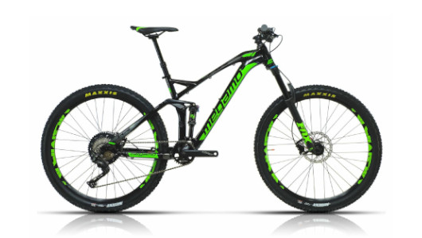
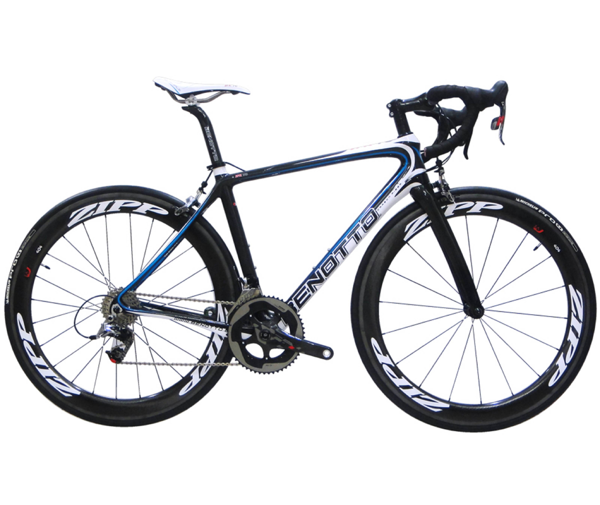
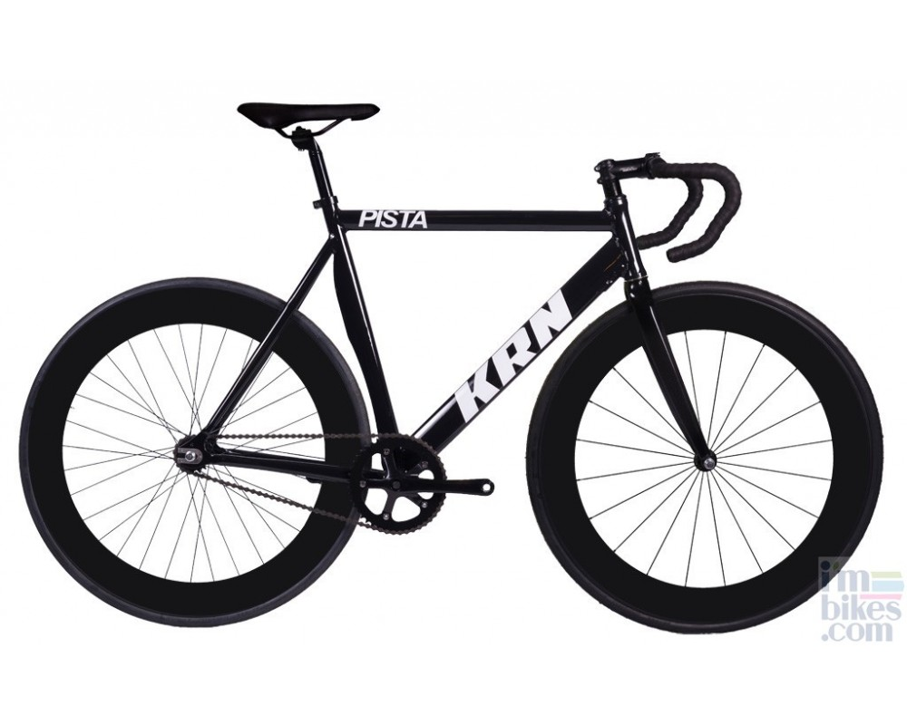

Julian Peñuela© ID:607452
Programacion web
Alonso Guevara Perez


Una bicicle de piñon fijo es una bicicleta que muchos de sus usuarios consideran un jugueto por decirlo asi , ya que debido a su peculiaridad en el funcionamiento llama la atencion de los jovenes de la ciudad de bogota, la bicicleta de piñon fijo a diferencia de los demas posee uñas rectas al final de la tijera del marco y el corazon de esta es una manzana con un piñon de contrarosca en el cual el usuario puede pedalear hacia delante y hacia atras.
1.Al no tener cableado para frenos ni cambio reduce la tediosa tarea del mantenimiento periodico y la pelea con los cables de estos.
2.Al no poder parar de pedalear se aumenta la resistencia de la cadencia en plano ys e fortifica los musculos en subida
3.Son mucho mas economicas que una bicicleta rutera o de montaña
4.Debido a su diseño son mas aerodinamicas
5.Hace trabajar mas los musculos de la pierna al tratar de disminuir la cadecia para frenar
...
Teniendo en cuenta la informacion anterior clasificar las siguientes imagen en el siguiente orden
1.Bicicleta de ruta.
2.Bicycleta de piñon fijo.
3.Bicicleta de montala
|  |  |  |
Julian Peñuela© ID:607452
Programacion web
Alonso Guevara Perez